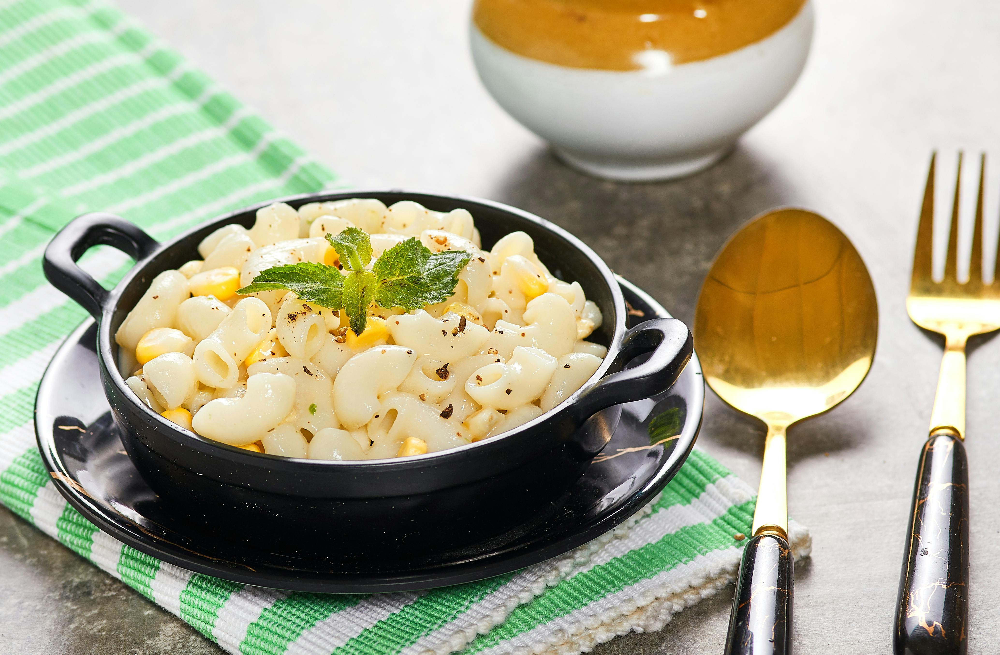

Mac and Cheese Recipe

Description
This crockpot mac and cheese is creamy, comforting, and takes just
moments to assemble in a slow cooker. Great for large family
gatherings and to take to potluck dinners. It's always a big hit!
Ingredients
- Macroni
- Butter
- Seasonings
- Cheese
- Milk Products
- Eggs
- Canned Soup
- Paprika
Steps
-
Boil the pasta in salted water, then drain and transfer to the
slow cooker.
-
Stir in the butter, seasonings, and about half of the Cheddar.
-
Whisk the evaporated milk and eggs together, then stir into the
pasta.
-
Whisk the milk and the soup together, then stir into the pasta.
-
Sprinkle the remaining cheese over the pasta mixture and garnish
with paprika.
- Cook on Low for 2 ½ to 3 hours.
Home